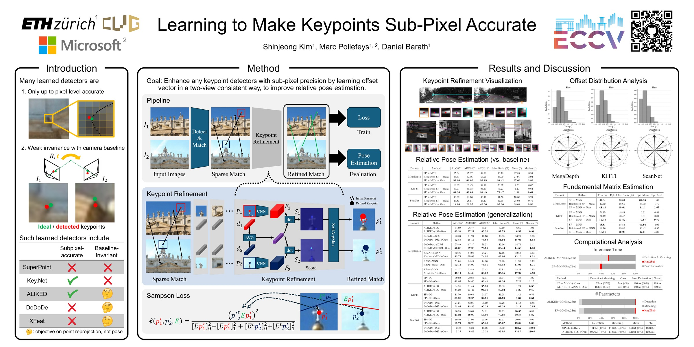

Learning to Make Keypoints Sub-Pixel Accurate
- 1 ETH Zurich
- 2 Microsoft
ECCV 2024
Abstract
This work addresses the challenge of sub-pixel accuracy in detecting 2D local features, a cornerstone problem in computer vision. Despite the advancements brought by neural network-based methods like SuperPoint and ALIKED, these modern approaches lag behind classical ones such as SIFT in keypoint localization accuracy due to their lack of sub-pixel precision. We propose a novel network that enhances any detector with sub-pixel precision by learning an offset vector for detected features, thereby eliminating the need for designing specialized sub-pixel accurate detectors. This optimization directly minimizes test-time evaluation metrics like relative pose error. Through extensive testing with both nearest neighbors matching and the recent LightGlue matcher across various real-world datasets, our method consistently outperforms existing methods in accuracy. Moreover, it adds only around 7 ms to the time of a particular detector.
Poster

BibTeX
@InProceedings{kim2024keypt2subpx,
author = {Shinjeong Kim and Marc Pollefeys and Daniel Barath},
title = {Learning to Make Keypoints Sub-Pixel Accurate},
booktitle = {The European Conference on Computer Vision (ECCV)},
year = {2024}
}